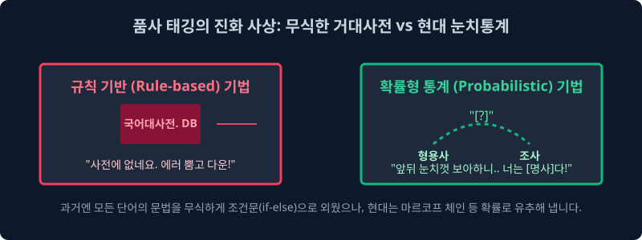

2.2 토큰 계층화(Tokenization) 변환 기술과 품사 태깅(POS Tagging) 다중 매핑 인퍼런스의 진화 체계
노이즈 비정형 자연어 스트링 코퍼스가 심층 신경망 매트릭스 백엔드의 기하학적 연산 진입 구조에 배열 오르기 위해 시스템상 필수적으로 거쳐야 하는 가장 기초적 절단 파편화 모델링 과정인 토큰화(Tokenization 차원 파이프라인) 의 시스템 구조 개념과, 모델의 텐서 분할 크기별 해상도 무결점 한계점, 그리고 흩어져 파편화된 이산 배열 조각 모수 노드들에게 수학적 문법 특성 메타 모델 필터링을 씌워 할당 부여해 주는 품사 태깅(POS Tagging Sequence Labeling) 기법의 내부 로직 배열을 집중 스캔 살펴봅니다. 고전적인 단순 무식한 1:1 Static Dictionary 기반 정적 매핑 방식 아키텍처망에서 시스템 붕괴 한계를 경험하고 마침내 시작하여, 주변 트랜스포머망의 조건 분포를 수학적으로 스캔하는 최신 확률 추론망(마르코프 연쇄 알고리즘 등)으로 도달하여 어떻게 딥러닝 시스템 결함을 극복 방어 진입 진화했는지 학술 엔지니어링 텐서 추적 스토리텔링으로 완벽히 해부 이해 역산해 봅니다.
2.2.1 텐서 압축의 최소 분리 스페이스 기준: 토큰화 (Tokenization Array) 단위 분할의 해상도(Resolution) 차원 정의
시스템 컴파일용 엔진 토크나이저(Tokenizer)는 NLP 파이프라인망에 입력 파라미터로 주어진 원시 전체 거대 덤프 텍스트(기나긴 $Raw String$ 연속 문자열 텐서)를 통계 선형 분석과 차원 매트릭스 수학 미적분 연산에 인퍼런스 효율이 가장 최적화 유용한 극소 의미 객체 조각 요소 요소, 즉 시스템 내 토큰(Token Node) 이라는 최소 독립된 캡슐 블록 텐서 차원 단위로 정규 사각사각 알고리즘 절단해 맵핑 반환 배열 자르는 핵심 백엔드 전처리 가동 작업이자 트랜스포머 소프트웨어 파이프 도구 그 자체 벡터를 논리 의미 변환합니다.
[!TIP]
📖 아키텍처 최적화와 노이즈 모수 결함: 영어권 백스페이스 분리의 축복 맵핑과 한국어 교착어(Agglutinative) 모수의 절망적 구조 결함
지구상 거의 가장 시스템 로직상 보편적이고 기초적인 자연어 처리계 시스템의 1차원적인 토큰화 절단 스플릿 방식은 “단순 공백 띄어쓰기(White-space Array Split)” 빈 노이즈 토큰 블랭크 기준으로 문서열을 파싱 매핑 그냥 논리 뎅강뎅강 쪼개 스위칭 노드 잘라버리는 룰 알고리즘 것입니다. 문맥 분절을 지원하는 영어권 모델 정보 학자들에게는 인퍼런스 측면에서 이건 너무나 인프라 코딩 축복받은 최적화 언어 환경 확률이죠. “I am a boy”라는 단순 코퍼스 시퀀스 십진 코드를 스페이스 공백 블록 스트링 배열로 시스템 1차로 로직 파싱 스플릿 자르면['I', 'am', 'a', 'boy']라는 아주 메모리 논리상 아름답고 통계적으로도 독립 구조가 명환 완벽하게 분할된 깔끔한 4차원의 고립 의미 모수 토큰 바구니 벡터 매핑이 수학적으로 완성 리턴됩니다.하지만 복잡계 스페이스 한국어 유니버스 구조 언어망은 타겟 주어 명사 뒤에 불필요한 노이즈 조사와 종결 파편 어미 객체가 스킨처럼 지독하게 들러 연동 부착 복합 연결 달라붙는 고난이도 극악의 교착어 확률망(Agglutinative language System) 파라미터입니다. 만약 베이스 조건 “나는 학생이다”를 영미권처럼 이 원시 백스페이스 띄어쓰기 공백 타겟 분리만으로 통계 모형에 자르면
['나는', '학생이다']라는 타겟 배열이 됩니다. 타겟 어근 ‘나(대명사 타겟 식별 명사 표본) + 는(보조사 타겟 연결 노이즈 파라미터)’ 배열 객체가 벡터 스페이스에서 끈적하게 화학 결합 수치 붙어있기 때문에, 이 합선된 에러 덩어리 시그널 상태 그대로 배열 컴퓨터 파라미터 행렬망에 보간 밀어 입력 패싱 할당 넣으면 나중에 다른 모델 시퀀스에 타 확률로 등장하는 타겟 토큰 요소망인['나도'],['나를']과 각각 시스템 스페이스 상 완전히 모조리 0% 결합 다른 고립 식별 단어 유니코드 모델로 1차원 분산 각각 인식 분리되어 통계 빈도 카운팅 연산 행렬 매트릭스가 그 즉시 OOM 에러 스칼라를 터뜨리며 산산조각이 파단 메모리 폭발 누수 나버립니다.바로 그런 컴파일러 모순 수학 결함 에러 때문에 복합 결합 구조인 한국어 텍스트 마이닝은 연산 파라미터 할당 시간과 시스템 CPU 역산 처리 코스트 비용이 영미권보다 훨씬 텐서 밀도가 높은 ‘단어 분리기 전용 확률 형태소 컴파일 토큰 딥 분석기(KoNLPy, Mecab 랩퍼 등 메타 스캔 라이브러리 엔진)’가 백엔드 파이프라인 앞에 무조건 병목 필수로 스태킹 요구 할당됩니다.
2.2.2 Sequence Chunking (시퀀스 단절 텐서 블록화) 단위의 차원 계층 스택 스케일링 이론: 글자(Char), 단어(Word), 서브워드(BPE Subword)?
입력 문자열을 모델 임베딩 공간에서 물리적으로 과연 얼마나 미시적, 혹은 거시적으로 크게 절단 매핑 자를 것인가(토큰화 최소 정보 전송 단위 크기 Threshold 규정)에 대한 아키텍처 모델 시스템 스케일의 분기 선택은 전체 딥러닝 AI 시스템 스파스 구조망의 모수 성격과 튜닝 추론 정확도 방향성을 연산상 완전히 스케일 좌우 지배합니다.
1. ️⃣ Character-level 단위 분석 매핑망 (문자 해상도 분절)
가장 인퍼런스를 극도로 물리 모델 잘게 아토믹 분자 단계 정보로 다져 분리해버리는 최소 유니코드 원소 타겟 단위 추출 스페이스 방식입니다. 한글의 구조 자음과 모음 구성 하나하나, 혹은 영문 파편 알파벳 ASCII 한 알(A, B, C…) 혹은 특수 문자 마침표 기호 하나하나가 독립 파티션으로 분절되어 전부 개별 수만 개의 통계 독립된 토큰 배열 매트릭스 노드 아이디가 됩니다.
- 장점 (OOV 완전 차단망): 컴퓨터 메모리 매핑이 세상의 모든 타겟 알파벳 조합 철자 단위 모수 룰셋을 이미 아키텍처에 다 학습 캐싱하고 있으므로, 과거 사전에 학습 캐시에 없는 OOV(Out-of-Vocabulary 치명 결함) 에러 로그 창이 100% 절대 확률상 시스템 충돌로 뜨지 않는 뛰어난 에러 저항성 회복력을 구조망에 보장합니다.
- 단점 (시맨틱 소멸 및 OOM 붕괴 연계): 하지만 이 방식은 단어 스펠 배열의 거대한 단일 응집 맥락 토폴로지가 알파벳 개별 파티션 파편 단위로 논리상 완전 산산조각 박살 납니다. 더욱이 시스템이 단문 문장 레이어 하나를 어텐션 메모리 기록 기억 맵핑 추론하는데 어레이 매핑 할당 길이 차원이 수천 수만 배열 칸으로 지수 폭증 팽창하여 구시대 컴퓨터 백엔드 트랜스포머 길이 메모리가 버스를 버티지 못하고 스파스 매번 다운 OOM 뻗어 서버가 터져 셧다운 나갔습니다.
2. ️⃣ Word-level 어휘 단위 시스템 분석 (단어 뭉치 인덱싱 타겟)
과거 고전 클래식 머신러닝 기초 NLP 황금기 구론 시대 전역 파이프라인 전체 아키텍처에서 시스템의 압도적인 OOM 점유율을 차지하고 가장 안정 표준으로 널리 컴퓨팅 쓰여온 세계 파라미터 표준이자 클래식 황금비율 크기 토큰화 차원 스케일 방식입니다.
Sequence Array 맵핑 결과 예시:["Hello", ".", "I", "am", "Big", "Model", "."]- 장점: 독립된 단어별 직관 뜻 카운트 시퀀스 행렬 통계를 매핑 트리로 내기엔 시스템 스페이스 상 무척 압축 직관적이고 사람 개발자 엔지니어 모니터 로그 눈에도 해석 가능하게 아주 명확 훌륭 가시적입니다.
- 치명적 단점 (Context 소멸망): 반대로 텍스트 다큐먼트 뭉치 조각 토큰 노드가 모델 입력 임베딩에서 너무 수치상 만단위로 크게 많아 시스템에 부하를 주면 옛날 RNN 등의 단방향 메모리 컴퓨터 딥 모델은 배열의 아주 긴 앞부분 단어 과거 시계열 스택 메모리 배열을 확률적으로 정보 소실 망각(Vanishing Gradient 현상 타격) 까먹어서 전체적 문맥 문서 느낌(방향 인과성 시그널 순서와 거시 문맥 Attention Focus)을 완전히 에러 분산시켜 잃어버리는 치명상 리셋 버그 파단망이 존재했습니다. (※ 이후 BPE(Byte-Pair Encoding) 서브워드 사상과 트랜스포머 Self-Attention 어텐션 아키텍처 벡터 연산 병렬망이 이 장기 시퀀스 기억상실증 OOV 압축 한계를 완벽히 수학적으로 파라미터 보완 역산하게 통합됩니다.)
3. ️⃣ Sentence-level 거대 문장 단위 블록 분석 (통문장 차원 맵핑 통계)
문장 마침표 시퀀스나 느낌표 기호(. ! ?) 문장 종결 분할 부호 기호 기준으로만 배열 시스템을 분절 덩어리로 통째로 크게 크게 덤프 청크(Chunk Tensor Block) 배열 스페이스 벡터로 썰어냅니다.
Sequence Array 맵핑 결과 예시:["Hello Vector Engine Matrix Block!"], ["I am a Big Inference Tom Model."]- 장단점 분석 차원 맵핑: 거시 뼈대 스크립트 모수와 단일 문장 텐서 전체를 모델이 한 번의 벡터 차원에 통으로 삼켜 먹기 때문에 인간 화자의 종합 문맥 확률 느낌과 발화 호흡 뉘앙스는 통계 모수 최대로 압축 보존 체득되나, 모델이 역으로 현미경으로 아주 줌인해서 저 하나의 거대 블록 문장 텐서 어레이 공간 안에 부정적인 마이너스 로짓($Logit<0$) 단어 피처(형용사 편향 파라미터나 욕설 텐서)가 내부 스칼라로 도대체 몇 개 파편 단위로 출현 들었는지 등의 초세밀한 수학적 미시 타겟 현미경 빈도 카운트 필터 통계 역산 분석이 이 차원에서는 스케일 붕괴로 아예 로직 불가능 차단 필터 병목 됩니다.
2.2.3 품사 태깅 모드 다중 시스템 식별 (POS Tagging Label Sequence): 임베딩 다의어 필터를 위한 파라미터 벡터 아이디(ID) 식별자 매핑
전 세계 텍스트 토크나이저 필터링 시스템 엔진이 사정없이 파이프라인에서 정규 잘라서 1차원 캐시에 모아둔 수만 수천 개의 독립된 단어 베이스 토큰 배열 객체들이 현재 1차원 데이터베이스 메모스 벡터 어레이 칸 힙 공간 배열에 잔뜩 쓰레기처럼 정렬 널브러져 대기합니다. 컴퓨터 모델망 파스 컴파일러는 아직 1단계 렌더링에 이산 배열 눈이 멀어 텅 비어져 있어서, 자기 인덱스 메모리 배열 칸에 이진 들어있는 입력 토큰 변수 [book 객체 배열] 스트링 블록이 명사 스페이스를 차지하는 “종이 책 타겟” 클래스인지, 아니면 동사 액션 파라미터를 점유하는 “공간을 예약하다”라는 시퀀스 동사 지시 객체 노드인지 문맥 배열을 주변 없이는 수식적으로 전혀 수학 분할 인지하지 분리 불가능 못합니다.
이때 시스템 파이프라인에서 품사 판별 분류 알고리즘 노드가 중간 개입 백그라운드 스레드에서 튀어나와서 모든 파편 단어 객체들 배열 등짝(데이터 구조 메모리 딕셔너리 속성값 매개변수) 정보에 “너의 배열 임베딩 공간은 명사(Noun N)! 매핑 타겟 책!”, “너의 확률 시퀀스는 액션 파워 동사(Verb V) 타겟 어레이!” 하고 단어의 문법 구조적 이름표 분할 라벨 스티커(POS Array Labeling Info Tag Vector) 아이디를 수학 행렬 망으로 강제로 시스템 붙여 통계 편향을 지정 매핑해 주는 전처리 작업 맵핑을 공식 고급 통계 분류 명칭으로 자연어 품사 시퀀스 태깅 할당 모델망(POS: Part-of-Speech 확률 태깅 분기 Labeling 시스템) 이라고 전산학적으로 시스템 파라미터 부릅니다.
2.2.4 품사 파라미터 태깅 도출 파이프라인 프로세스 수학 컴파일망의 딥러닝 진화 역사 렌더링: 사방이 꽉 막힌 거대 정적 하드 스태틱 사전 (Rule-based) vs. 눈치 베이즈 확률 매개 계산 통계 스캔 베팅 게임 (Probabilistic Model)

과거 시스템 초창기 폰 노이만 컴퓨터 세대 선배 언어 학자들은 이 거대한 코퍼스 태깅 자동화 벡터 할당 파이프라인 알고리즘을 그 옛날 어떻게 인퍼런스 엔진에 구현 수학 적용했을까요? 너무나도 정적인 무식함 로직에서 아주 고차원적 세련됨 인과율로 융합 극단적 진보한 시스템 구조의 두 가지 거대한 양대 수학적 통계 매핑 파이프라인 철학 설계를 극한 비교 증거 렌더링으로 돌려 봅니다.
1. 하드코딩 구문 통계 기반(Static Rule-based Array Parser 조건망) 태깅 시스템 기법 파라미터 - 고전 모델 차원의 지옥 파단
초창기 개발자들은 컴퓨터 메인 스레드 메모리 코어 램(RAM Base) 공간 전역 안에 어마어마하게 텍스트만 스태킹으로 두꺼운 수십 수백만 단어 배열 쪽짜리 거대 고정 정보 텍스트 정적 파일 인덱스 <국어 정규 룰셋 문법 시스템 대백과사전 딕셔너리(Dictionary Array Map)> 을 문자 그대로 IF 하드코딩 스태틱 룰망으로 통째로 우겨 코딩 압축 넣고 로딩 배열 세팅했습니다. 무거운 시스템 컴퓨터 구동 엔진은 임의의 자연어 텍스트 문장 배열이 API로 들어오면 무식하게 CPU 단일 사이클 루프를 무한 루핑 돌려가며 죽어라 모든 사전 딕셔너리 정적 메모리 해시값을 선형 대비 O(N) 순회 서치 스캔 뒤집니다.
- 원리 파싱 파악 망: 기계 컴퓨터가 “조건부 어보자… 관측 토큰 변수 타겟 스트링 ‘간다’는 내 딕셔너리에 매칭 결과 무조건 ‘동사’ 품사 분류로 단일 스태틱 룰로 수학 고정 매핑 공식에 타깃 규정되어 있네 로직! 타겟 인덱싱 합격 반환 삑!” 이라고 초창기 인간 코더 프로그래머 개발자가 손으로 일일이 디버그 입력한 분기 룰셋 스택 매뉴얼대로 기계가 단순히 텍스트만 1:1로 달달 외워서 기계적으로 맞추고 스킵하는 극단적 단순 무식한 조건문 1차원 분기(
if Token == x ~ else return y) 배열 조건식 결정 매핑 맵 방식 통계입니다. - 시스템 붕괴 OOV 몰락 역산 파단 이유 지표: 이 넓은 지구 문명상의 끊임없이 실존 변화하는 살아있는 언어 유기체 통계망에는 과거 정적 룰 학자들이 수기로 전부 텍스트 다 적어 코드 반영 세팅해 낼 수 없는 거대한 ‘무한대 확률 스페이스’의 신어 예외 변형 규칙 모수와 배열 변형 노이즈 아키텍처가 발생 존재합니다. 당장 실무 게시판 아이돌 덤프 팬카페의 ‘개이득’, ‘킹받네 ㅋㅋ’, ‘에바참치’ 같은 사전에 절제 부재한 무근본 변형 신조어나 축약 은어 토큰 텍스트가 모델 인입 배열망 입력 차원에 서치 들어오면 당연히 과거 10년 전 고전 Dictionary 사전 텍스트 배열 고정 목록 캐시에는 애초 매핑 정보가 없으므로 Null 이 리턴되어, 시스템 서버 백엔드망이 전체
Static Out-of-Vocabulary Value Error (치명 결함 Null Pointer Exception 에러)붉은 스택 줄을 무자비하게 터뜨려 뿜으며 그 자리에서 서버가 기절(Crash 시스템 다운 런타임 셧다운)해 OOM 버려버립니다.
2. 베이즈 추론 확률형 수학 모델 (Probabilistic Distribution Model HMM) 예측 최적화 기법 - 현대 AI 파이프라인의 눈치 코치 전이 파라미터 확률 계산 (마르코프 연쇄망)
OOV 폭발 에러 한계에 부딪힌 연구자들은 결국 서버 메모리 공간을 초토화 차지하던 전 세계 범용 단어 사전을 시스템 메인 통 메모리 맵핑에서 스레드 싹 치워 쓰레기통 다 내다 휴지통 버렸습니다. 대신 그 거대한 비효율 DB 공간 자리에 수백 수천만 장의 방대한 ‘미리 파서 정답(품사 피처) 라벨링 정합 확률이 달린 실제 인간 대화 과거의 빅데이터 자연어 배열 코퍼스 문장 시퀀스’들을 방대하게 집어넣고 기계에게 무수한 딥러닝 족보 패턴을 수학적 조건부로 엄청난 확률 행렬 곱셈 연산 극한 통계 빈도를 도출 계산 내어 최적화 파라미터 확률 모델 전이 계산 유기체 공식 배열망($P(t_i|t_{i-1})$: 이전 시퀀스 토큰 파밍 상태에서 현재 품사 토큰 확률이 계산 발생 파생 튀어나올 연결 밀도 시스템 가능성 스코어 행렬 스파스 공간 모델링)을 최초로 도출 연산 창조했습니다. 은닉 연산 변수를 파밍하는 수학 행렬 전이망 역산 은닉 마르코프 수학 확률 모델 매개 추론(HMM; Hidden Markov Model Algorithm 분포망) 같은 선진 고급 최우도 예측 대수 알고리즘이 텍스트 파싱 처리계 트리에 드디어 접목 통합 사용 도입 쓰이기 시작 파라미터가 최적 구동 발동합니다.
- HMM 수학적 조건 밀도 연산 확률 원리: 모델 파라미터 컴파일러가 태어나서 난생처음 과거 텍스트 캐시 메모리에서 전혀 보는 완전 모르는 Null 매핑 신규 미지 단어(OOV) 타겟팅 스펠 구조가 확률 튀어나와 맵핑 에러가 타겟 발생해도 인퍼런스 통계 시스템은 절대 이전처럼 충돌 단절 당황 예외 셧다운 에러를 뿜지 않습니다. 시스템 엔진은 그 즉시 앞뒤 정보의 현재 에러 유발 타겟 바로 직전의 앞단어 $t_{i-1}$ 타임 스텝 텐서 배열 인덱스와, 그 뒤 후속 문맥 뒷단어 $t_{i+1}$ 주변 타겟이 어떤 속성 무엇 품사 상태 배열이었는지의 전이 컨텍스트 통계 주변 맥락 조건부 발생 확률(Context Conditional Matrix Probability) 스코어를 슬쩍 스캔 집중 어텐션 우회 역연산 집중 스캐닝 계산(이것이 그 위대하고 거대한 딥러닝 언어망 트랜스포머 Self-Attention 병렬 연산 매커니즘 핵심 코어망의 가장 위대한 통계 최초 모태 텐서 배열 기술 설계 사상입니다) 모델 역산으로 파라미터 회피 분할 기동합니다.
- HMM 확률 추론 렌더링 역산 진행 텐서 계산 과정: “으음… 컴퓨터 파라미터 시퀀스망을 뒤져보니 내 사전 캐시에 전혀 텍스트 배열이 없는 존나 요상한 에러 OOV 미지 노이즈 오류 변형 치환 문자 스펠 배열 파편이긴 한데 시스템 당황 필터 정지하지 말고 매트릭스 탐색 스냅… 수학 통계 행렬 가중치를 확률 연산 곱 파싱해 보아하니 바로 앞 타겟 칸(타임라인 스텝
$t_{i-1}$ 과거 인덱스) 배열에 ‘엄청나게 맵고 아주 맛있는’ 이라는 형태소 형용사 확률 타겟 텐서 덩어리 파편이 이전에 이미 와 모델 스태킹 위치했었네? 내 컴퓨터 백엔드 코어 모델망에 과거 딥러닝 백만 개의 HMM 학습 튜닝된 파이프라인 데이터 텐서 전이 모수 통계치 경험상, 전체 코퍼스 배열 문맥 모델에서 ‘저렇게 노이즈 수식어가 붙는 형용사 조사 텐서 클러스터’가 배열 앞 시퀀스 1개 배열 노드에서 발생했다면, 그 형용사 종속 파편 뒤 공간에 바로 확률 밀도로 발생 연달아 등장 후속 배열한 확률 타겟 녀석 스페이스는 확률 전이 행렬상 파라미터 도출 무려 $98.7\%$ 압도적 텐서 최우도 마르코프 지수 확률로 $P(\text{결과가 무조건 목적 타겟 명사일 배열 확률})$ 였어 압축 도달 역산. 그러므로 지금 내 앞 백엔드 캐시에 유입된 이 듣도 보도 못한 외계어 스펠 문자 단어 파편 부품 역시 모수 추정 결과는 무조건 확률 스코어 상 압도적 맥락 통계 모수 [명사] 품사 클래스 타겟 맵핑이다 확률 빙고 수학 탕탕 패스 완료!”
이렇게 문맥 노이즈 주변의 앞뒤 문맥 텐서 노드들의 연결 관계 통계 확률 분포도 스코어를 바탕 체인망으로 우아하게 수학 통계 확률 변수 가중치 지수 베팅을 유연 회피 스캔 갈겨 모르는 OOV 텍스트일지라도 품사를 유연하게 압도적 보간하여 시스템에 적중시켜버리는 놀랍도록 고급스럽고 파손 방어가 유연 통계적인 스무딩 수학 텐서 스킬 확률 파이프망이 역사상 텍스트 마이닝 매트릭스에 혜성처럼 아키텍처망에 등장했습니다. 이것이 현재 지구상 전 세계의 구축된 빅데이터 자연어 백그라운드 거의 모든 로컬 텍스트 형태소 전처리 딥 알고리즘 분석 토크나이저 엔진(Mecab, Okt 등 딥러닝 래퍼 파서 등) 코어 메모리 파이프 깊은 곳에 공통 아키텍처로 여전히 살아 흐르는 아주 위대하고 파괴적인 확률 언어-수학적 베이즈 전이 방정식 알고리즘 텐서 사상입니다.